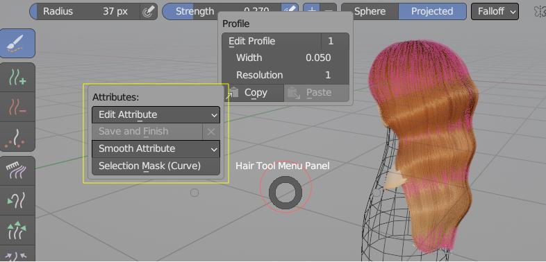

Sculpt Mode: Attribute Editing¶
Nope, there are no sculpting brushes in Hair Tool. But there is new ability to edit curve attributes using built-in 'Paint Selection' brush. This is intended to be used with Curve Attribute input mask.
 Editing curve attributes in curve sculpt mode (under Ctrl+Shift+H pie menu)
Editing Curve Attributes¶
When entering Edit Attribute mode, you can edit existing or create attribute. Attribute is painted by using 'Paint Selection' brush
Edit Attribute Switches to Edit Attribute Mode. Use 'Paint Selection' brush (in point selection mode) to edit attribute
Save and Finish When done editing attribute, save changes and finish editing.
Smooth Attribute Smooth selected curve attribute.
Selection Mask It will create curve selection gradient mask. Can be used in 'Edit Attribute' mode.
Selection Mask was used here to create GRADIENT attribute. It was then used Push Out deformer in 'Curve Attribute' input mask